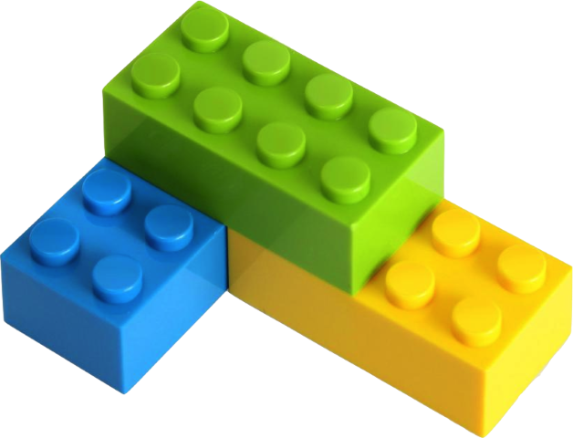
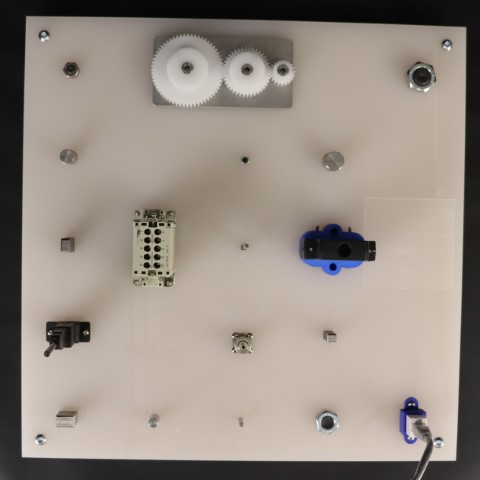

Robotics Training Center

Robotics Training Center (RTC) is a project funded by NIST in 2023-2024. The project was proposed by Carnegie Mellon University in collaboration with ARM Institute
The center includes a set of robots repeatedly performing manufacturing and assembly manipulation tasks with an adjustable level of variation. To achieve the vision, the project consisted of five core thrusts:
Self-supervised vision-based object manipulation
Vibrotactile sensing for monitoring manufacturing processes
Integration and development of a digital backbone for large-scale data collection and processing in robotics training
Identification of technology adoption incentive mechanisms for manufacturing ecosystems
Development of strategies for the transition of the above technologies to the ARM Institute ecosystem
The website is documentation of the robotic system which is result of first three thrust.
Purpose
To create robotic skills that can be combined with each other to enable a robot to perform a manufacturing task
For manufacturing tasks, we focus on the following
 |
 |
|---|---|
LEGO block assembly |
NIST task board #1 (insertion tasks) |
To create an autonomy pipeline that can be transferred to the ARM Institute for generalization across the robots that they have, and for extension to other forms of manufacturing tasks, as appropriate
Contributions
The current version of the robot training center was possible due to team work and contributions from following members
David Held, Octavian Donca, Oliver Kroemer, Kevin Zhang, Christopher Chang, Michael Skocik, Henrik Bingemann, Gary Fedder, Rod Heiple, Stephanie Steren Ruta, Shobhit Aggarwal